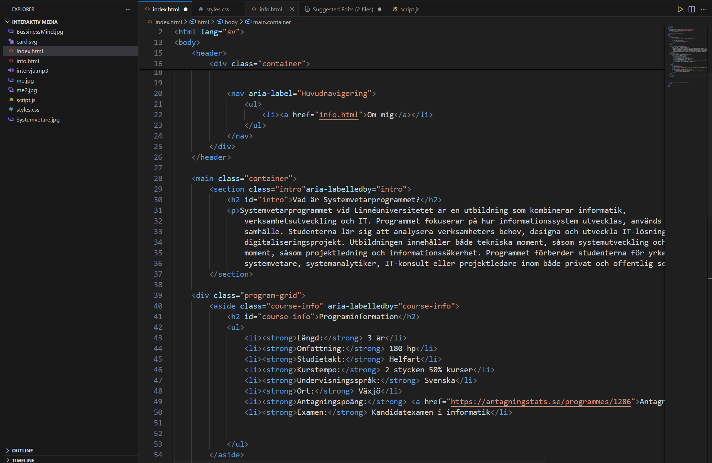
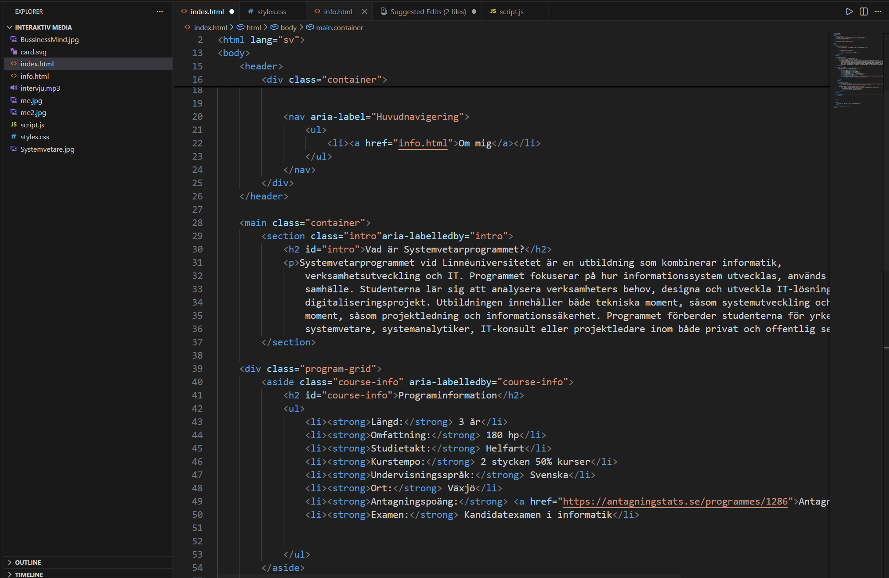

Vad är Systemvetarprogrammet?
Systemvetarprogrammet vid Linnéuniversitetet är en utbildning som kombinerar informatik, verksamhetsutveckling och IT. Programmet fokuserar på hur informationssystem utvecklas, används och påverkar organisationer och samhälle. Studenterna lär sig att analysera verksamheters behov, designa och utveckla IT-lösningar samt leda digitaliseringsprojekt. Utbildningen innehåller både tekniska moment, såsom systemutveckling och databaser, och organisatoriska moment, såsom projektledning och informationssäkerhet. Programmet förberder studenterna för yrkesroller som systemvetare, systemanalytiker, IT-konsult eller projektledare inom både privat och offentlig sektor.
År 1 — Introduktion och grunder
- Grundläggande informatik - Grundläggande kunskap och förståelse för informatik som ämne. Med bas i systemperspektiv diskuteras centrala begrepp, tekniken och samhällets digitala utveckling.
- Grundläggande programmering - En inledande programmeringskurs med fokus på programmeringsfärdigheter och vanliga programspråkskonstruktioner.
- Organisatoriska system - Kursen ger en introduktion till organisation samt hur dessa kan diagnostiseras och modelleras för livskraftighet och stabilitet i ett dynamiskt samhälle.
- Databaser och data modellering - Kurs som behandlar hur data modelleras, lagras i och hämtas ur databaser.
- Objektorienterad programmering och data strukturer - Kursens syfte är att studenten tillägnar sig en förståelse för objektorienterad programmering och datastrukturer. Kursen kräver att studenten har kunskap om grundläggande programmering.
- Verksamhetsmodellering - Kursen syftar till att studenten ska tillägna sig kunskaper och färdigheter i att metodiskt analysera och skapa modeller av verksamheter, informationsflöden och beslutsfattande för användning vid verksamhetsutveckling.
- Verksamhetens IT-säkerhet - Kursens syfte är att studenten ska tillägna sig ett IT- säkerhetstänkande i samband med utveckling, förvaltning och digitalisering av informationssystem i verksamheter.
- Introduktion till data analytics - Kursen syftar till att studenten tillägnar sig teoretiska kunskaper och praktiska färdigheter inom data analytics samt insikt i aktuella trender inom området.
År 2 — Fördjupning
- Problemstrukturering- Kursens syfte är att ge färdigheter i problemstrukturering för verksamhetsutveckling utifrån ett digitaliseringsperspektiv.
- Objektorienterad analys och processbeskrivning - Kursen bygger vidare på de grundläggande programmeringskurserna men fokuserar på abstraktionen objekt.
- Projektledning för digitala innovationer- Kursen syftar till att de studen ska tillägna sig kunskaper i socioteknisk design och införande av IS/IT i verksamhet och organisationer.
- Utveckling av webbaserade applikationer - Syftet med kursen är att studenten ska tillägna sig kunskap om hur moderna webbaserade applikationer och informationssystem tas fram. Både klient- och serverbaserade tekniker ska praktiskt användas för att implementera webbaserade lösningar med databaser i grunden för informationshantering.
- Utvärdering och implementering - Modeller och metoder för utvärdering och implementering.
- Säkerställning av kvalitét i IS - Kursens syfte är att studenten ska tillägna sig en förståelse för kvalitetssäkring av informationssystem och att praktiskt genomför en testprocess med testplan och testfall på ett mindre informationssystem.
- Vetenskapliga metoder - Studenten ska fördjupa kunskaperna om informatik som forskningsämne samt kunna bedöma och överväga användning av olika metoder i relation till ett forskningsproblem
- Grundläggande projektmetodik - I kursen tillägnar sig studenten teoretiska och praktiska färdigheter att kunna bedriva effektivt projektarbete.
År 3 — Fria val
Sista året erbjuder studenten möjlighet att välja kurser och praktik utifrån egna intressen och karriärmål.
- Valbar kurs 15 hp: Verksamhetsförlagd praktik - Praktik vid en organisation, där ett projektarbete genomförs utifrån de kunskaper som studenten erhållit under utbildningen, tillsammans med dokumentation och presentation av arbetet. eller valfria kurser 15 hp.
- Valfri kurser (30 hp) - Kurserna väljs utanför huvudämnet Informatik.
- Examensarbete (15 hp) - Uppsatsarbete utifrån vetenskapliga metoder och forskningsöversikt inom informatik. Under kursen skall studenten skriftligt redovisa examensarbetet och presentera resultatet vid seminarier.
Klicka för att se ett exempel på kodning som du lär dig på Systemvetarprogrammet
 
